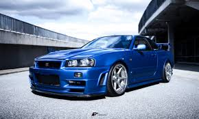
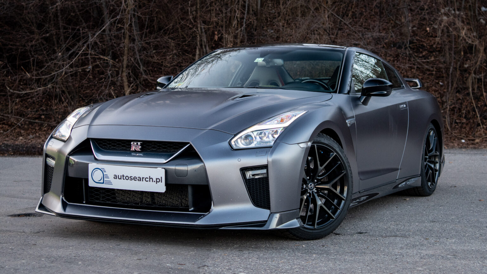

Firma Nissan to japoński producent samochodów, znany z produkcji wydajnych, sportowych modeli, które łączą nowoczesny design z doskonałymi osiągami. Nissan jest jednym z liderów w segmencie sportowych samochodów, oferując modele, które wyznaczają standardy w motoryzacji.
Nissan GT-R
Nissan Skyline R34 to jeden z najsłynniejszych modeli w historii japońskiej motoryzacji. Został wyposażony w silnik RB26DETT, który generuje 280 KM. Dzięki zaawansowanej technologii oraz świetnym właściwościom jezdnym, R34 stał się legendą zarówno na torach, jak i na drogach. To auto, które pokochały rzesze fanów na całym świecie.
Nissan Skyline R34
Nissan GT-R to samochód, który zrewolucjonizował rynek supersamochodów. Z silnikiem VR38DETT o mocy 565 KM, GT-R łączy wybitną wydajność z zaawansowaną elektroniką. To auto, które oferuje nie tylko prędkość, ale i precyzję prowadzenia, zachwycając zarówno na drodze, jak i na torze wyścigowym.